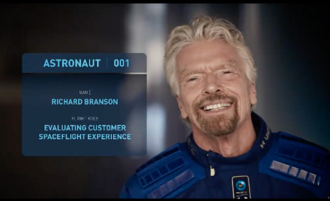
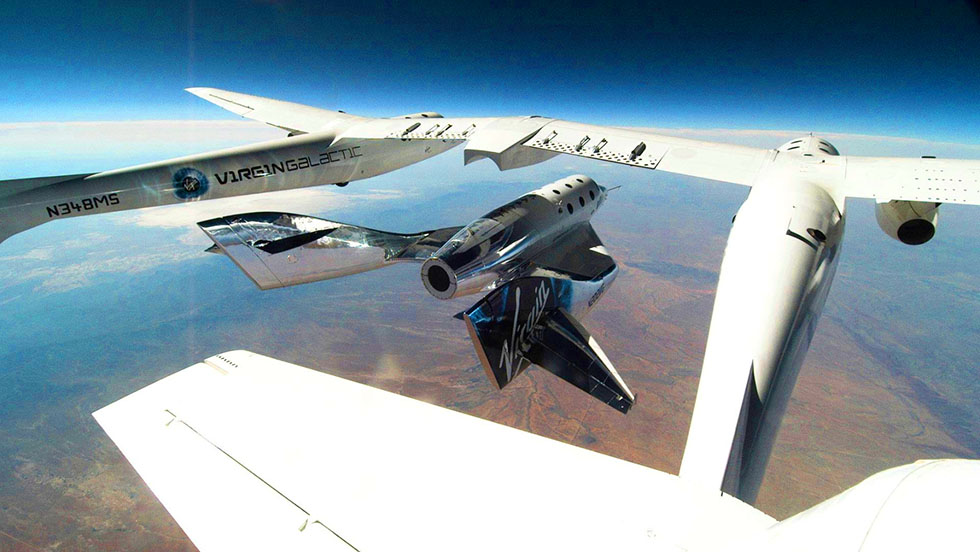

Решено: Ричард Бренсон летит в космос 11 июля
Миллиардер Ричард Бренсон летит в космос со своей командой 11 июля 2021 года. Это на 9 раньше чем запланированный полет Джеффа Безоса. Таким образом Бренсон хочет победить в гонке за место «первого» суборбитального космического туриста.
Совсем недавно компания Virgin Galactic получила лицензию разрешающую проведение запусков космических туристов от властей США. И вот британский миллиардер спешит обогнать своего амриканского коллегу.

На официальном сайте Virgin Galactic появился отсчет времени до запуска первой группы во главе с Бренсоном в космос. Так же на сайте будет доступна живая трансляция полета группы Unity 22 (так они себя называют). Не пропустите!
В честь этого события Ричард Бренсон выложил в своем инстаграме несколько фотографий и видео, в котором говорит, как никогда не сдавался и стремился к звездам. Так же целью полета космонавт 001 назвал «оценку качества сервиса» перед официальным открытием частных космических полетов.
Кто остальные?
Остальными членами экипажа являются сотрудники Virgin Galactic так или иначе отвечающие за полеты, разработку ракеты, процедур перед и после полета, дизайна капсулы и оборудования, пользовательского опыта, а так же пилот.
Бэт Мозес — главный инструктор новоиспеченных космонавтов.
Колин Беннетт — главный инженер.
Сириша Бандла — вице-президент в области исследований и по части взаимодействия с правительством.
А так же два пилота ракетоплана VSS Unity: Дэйв Маккей и Майкл Масуччи. Пилотировать же самолет-носитель VMS Eve будут Си-Джей Стурков и Келли Латимер.
Ракетоплан VSS Unity (с туристами) отделяется от корабля-носителя VMS Eve чтобы продолжить свой путь в космос самостоятельно. Фото Virgin Galactic